How To Install a Debian 11#
Step 1: Sistema de arranque#
Una vez que el sistema arranque, obtendremos la siguiente pantalla.
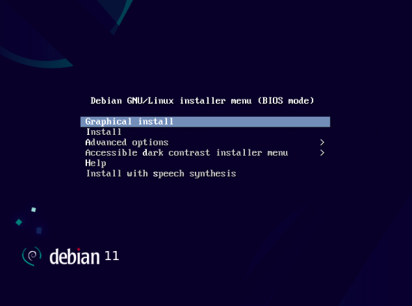Step 2: Elija el idioma para la instalación de Debian 11#
Elija su idioma preferido y haga clic en continuar,
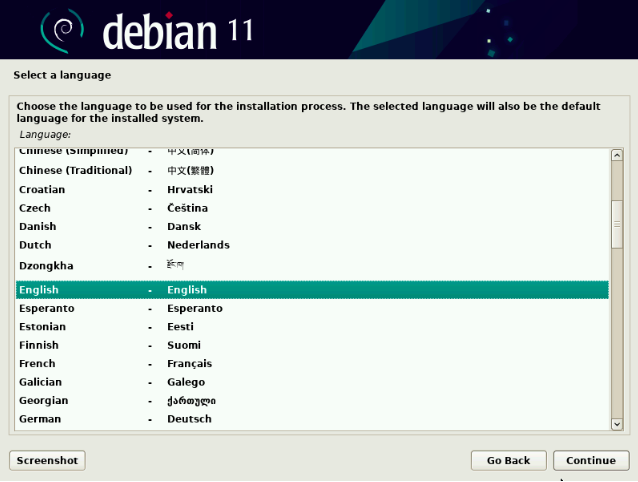Step 3: Seleccione la ubicación preferida#
Elija su ubicación preferida que se usará para configurar la zona horaria de su sistema.
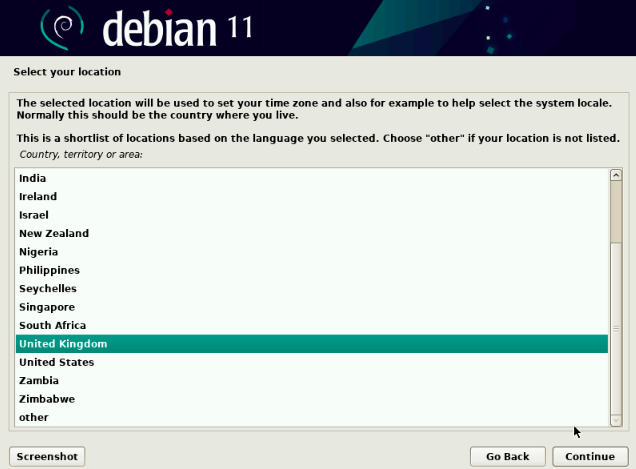Step 4: Seleccionar diseño de teclado#
En este paso, elija la distribución del teclado y luego haga clic en continuar para proceder .. image:: /images/debian/4.png
Step 5: CConfiguración de nombre de host y dominio#
En este paso, el instalador le pedirá que configure el nombre de host, así que especifique el nombre de host que desea configurar y luego haga clic en continuar.
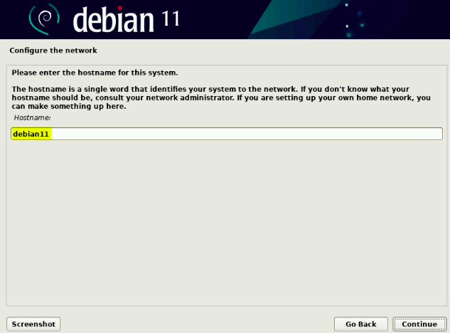Step 6: Establecer contraseña de usuario raíz#
Especifique la contraseña del usuario raíz y presione continuar para continuar
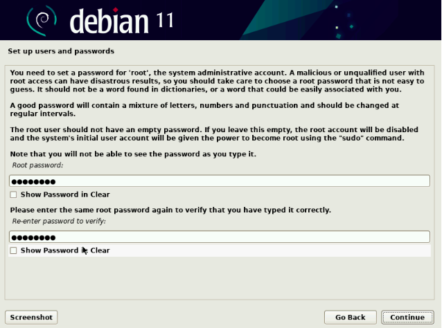Step 7: Crear usuario local y configurar su contraseña#
Especifique el nombre completo de su usuario local,
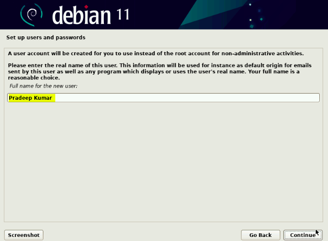 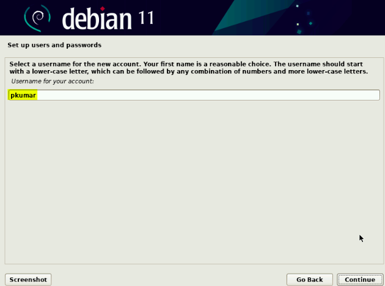Haga clic en continuar y luego en la siguiente pantalla, especifique la contraseña del usuario local.
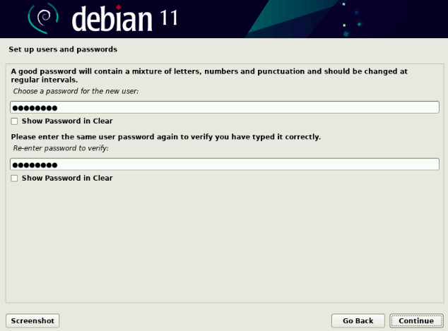Step 8: Elija el método de partición#
Guiado: use todo el disco (se creará una partición automáticamente en todo el disco)
Guiado: use todo el disco y configure LVM (se creará una partición basada en LVM automáticamente en todo el disco)
Guiado: use todo el disco y configure LVM encriptado (creará particiones basadas en LVM y encriptará el disco)
Manual: permitirá crear sus propias particiones personalizadas.
Elija la opción que se adapte a su instalación,
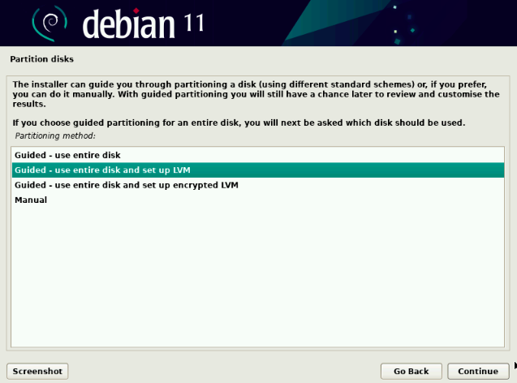Elija ‘Sí’ para escribir los cambios en el disco y luego haga clic en Continuar
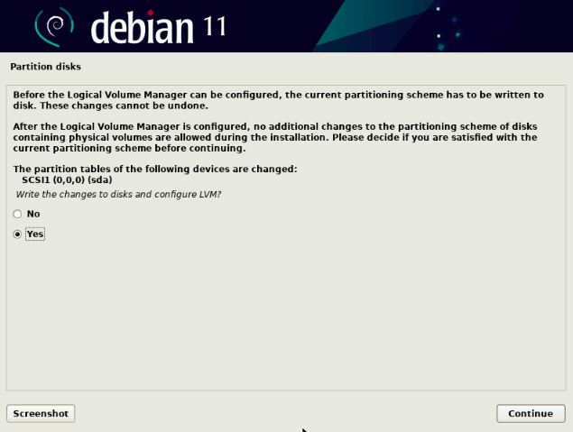Step 9: Instalación iniciada#
En este paso, se inicia la instalación real de Debian 11,
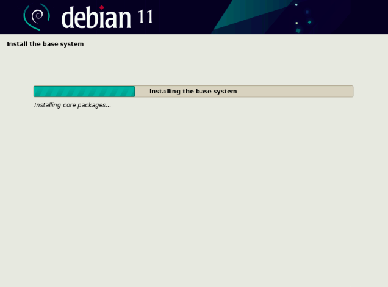Después de un par de minutos, se le pedirá que escanee los medios de instalación, elija ‘No’ y haga clic en continuar para continuar con la instalación.
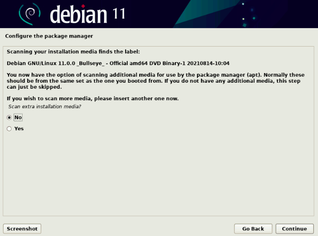Step 10: Selección del espejo de Debian 11#
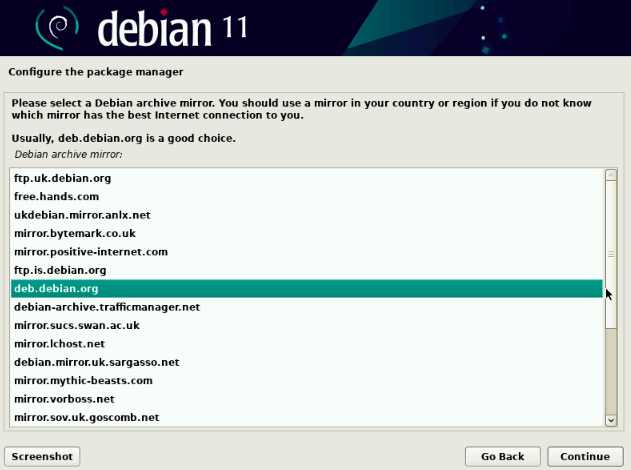Step 11: Encuesta de Debian#
En la siguiente pantalla se le pedirá que participe en la encuesta del paquete, elija ‘No’ y luego haga clic en continuar.
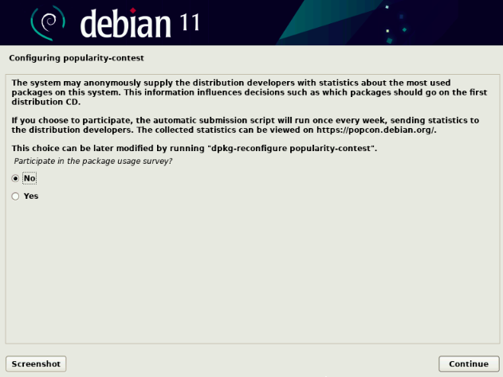Step 12: Selección de software#
Ahora elija el software que desea instalar, como entorno de escritorio y servidores, etc. Así que haga la selección que se adapte a su instalación.
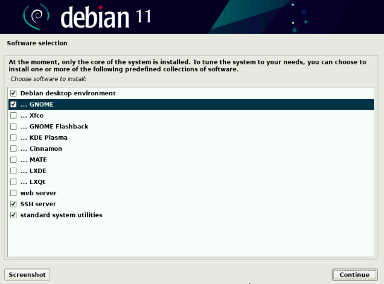Step 13: Grub#
En la siguiente pantalla, elija ‘Sí’ para instalar el cargador de arranque Grub en el disco duro principal.
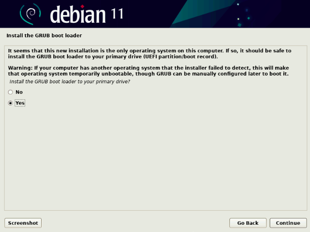